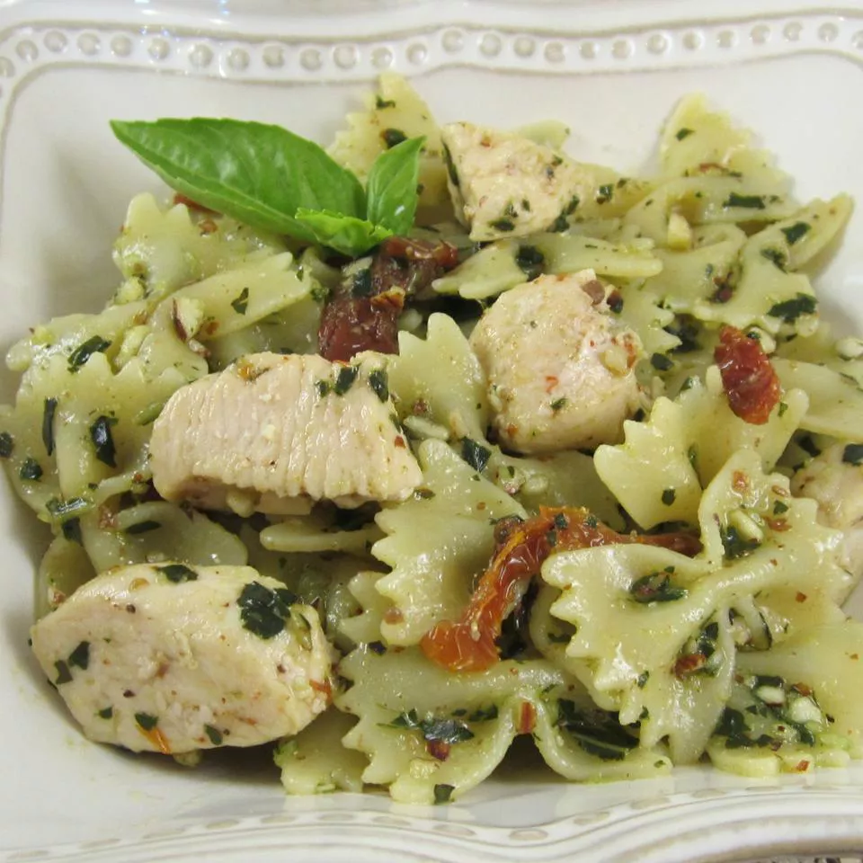

Chicken Pesto Pasta
Home

Description
Just an all round good pasta dish. Easy to cook.
Ingredients
- 1 (16 ounce) package bow tie pasta
- 1 teaspoon olive oil
- 2 cloves garlic, minced
- 2 skinless, boneless chicken breasts, cut into bite-sized pieces
- 1 pinch crushed red pepper flakes, or to taste
- ½ cup pesto sauce
- ⅓ cup oil-packed sun-dried tomatoes, drained and cut into strips
Steps
- Bring a large pot of lightly salted water to a boil. Add pasta and cook until al dente, 8 to 10 minutes; drain.
- Heat oil in a large skillet over medium heat. Sauté garlic until tender, then stir in chicken and season with red pepper flakes. Cook until chicken is golden and cooked through.
- Combine pasta, chicken, pesto, and sun-dried tomatoes in a large bowl; toss to coat evenly.